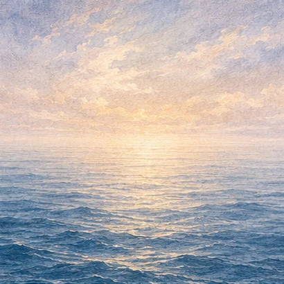
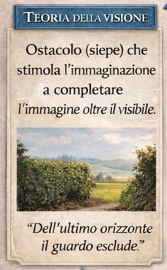
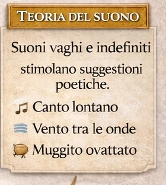

Lezione 8 di 8 · Il testo · Interpretazione
Dalla siepe al mare
Com’è possibile naufragare restando sullo stesso colle?


Una mappa da leggere con i versi




Segui i dimostrativi
All’inizio «questa siepe» è a portata di mano. Poi «quello / Infinito silenzio» sembra lontano, oltre il limite. Nel finale leggiamo «questa / Immensità» e «questo mare». Il cambiamento suggerisce che ciò che prima era distante è diventato l’esperienza presente di chi parla.
Spiega un’apparente stranezza
Il naufragio richiama un pericolo. Il testo ha davvero sfiorato la paura: «per poco / Il cor non si spaura». Alla fine compare «dolce». Una lettura possibile è che, lasciandosi andare a un’immensità immaginata, il pensiero provi per un istante il piacere di perdere i propri confini.
Costruisci il tuo commento
| Passo | Una domanda per scrivere |
|---|---|
| 1 · Formula un’idea | Perché il «mare» compare proprio alla fine? |
| 2 · Porta due indizi | Quale parola dei primi versi prepara il passaggio? Quale parola del finale lo compie? |
| 3 · Spiega il legame | Come contribuiscono una scelta di forma e un’idea di Leopardi alla tua interpretazione? |
La mappa dell’Infinito
Zibaldone, pp. autografe 165–183 e 1927–1930. Gli appunti del 1820–1821 aiutano a leggere la poesia composta nel 1819.